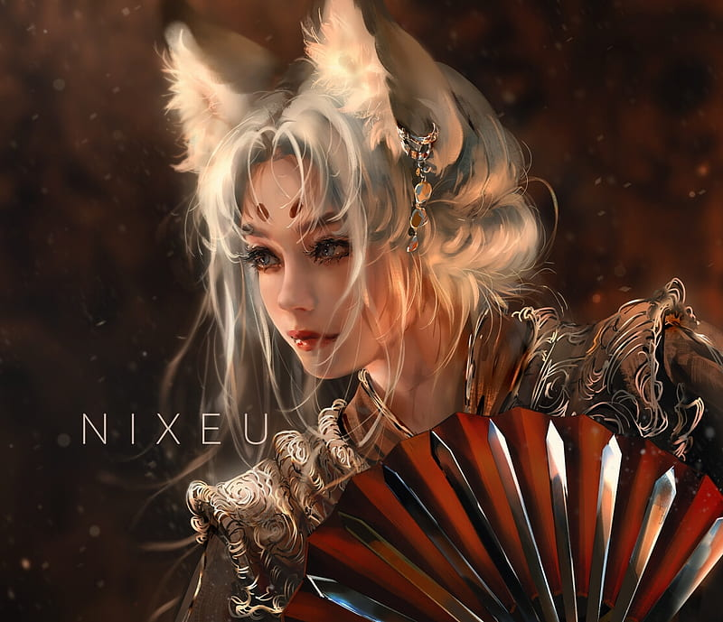
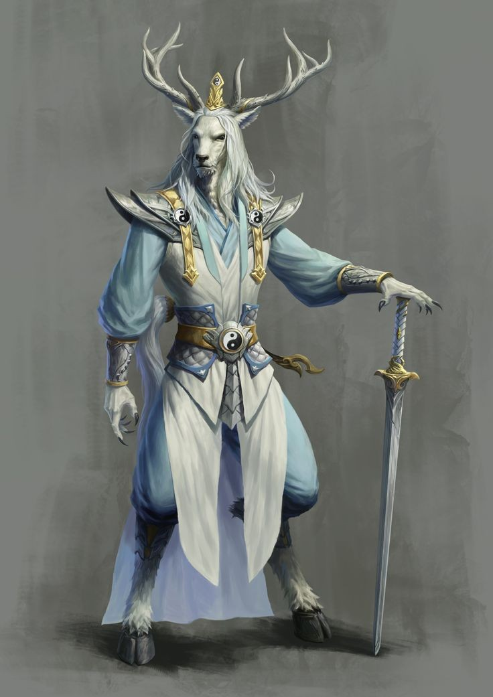

Force
Variable
Résistance
Variable
Dextérité
Variable
Magie
Variable
Ingénierie (variable en fonction du lieu de vie)


Environnement : Archipel - Terres-d'Origine
Durée de vie moyenne : 120 ans
Taille : M-G
Système politique : Non stable, n'ayant pas de royaume propre
Statut politique : Peuple dénué de terres
Relations hostiles : -
Alliés : -
Croyance : Variable
Force
Variable
Résistance
Variable
Dextérité
Variable
Magie
Variable
Ingénierie (variable en fonction du lieu de vie)
Capacités innées : Dépendantes de l'animal lié
Facilités magiques : Variables en fonction de l'affiliation possible du côté bête à un élément ou un environnement
Impossibilités : Élément mal-aimé de la bête liée
Profil type : Variable
Alimentation : Variable en fonction du côté animal
Montures : Variable en fonction de la région d'origine
Les demi-humains sont marqués par leur non appartenance au règne animal mais aussi par leur absence de société structurée. Leur apparence est bipède, mais leurs corps sont ornés d’attributs bestiaux parfois déroutants ; cornes, pilosité, branchies, queues... Parmi les demi-humains, nous comptons par exemple les satyres (demi-bouc) ou encore les Hommes-ours.
Il n’y a aucune terre sous la possession de cette espèce, ni même une ville leur étant propre, ses représentants sont disséminés entre les Terres-d’Origine et l’Archipel, acceptés dans les sociétés de ces deux pans de l’Yndrill. Leurs croyances divergent donc en fonction des autres peuples dans lesquels l’individu s'immisce et se fait au cas par cas, tout comme leurs facultés naturelles.
Nombre d'OC de cette race sur Yndrill: -